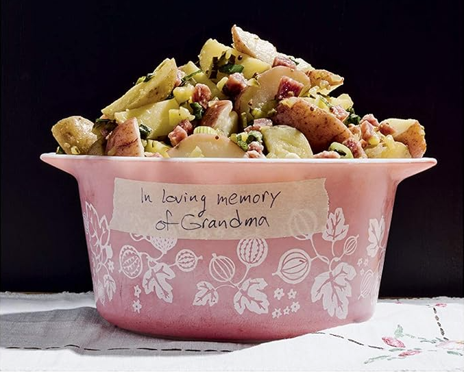

Potato Salad for the Living
Home
All images and information for this recipe comes from the Amazon listing for the "You Suck at Cooking" Cookbook.

This is not an affiliate link and I do not receive and financial compensation if you use it. However, I did purchase this book and I love it!

Description
This is not the kind of potato salad you want to bring to a
funeral. A funeral is about paying respect to the dead. And this
potato salad would be a disrespectful gesture because it would
pull all of the attention away from the person who died and
place it on the potato salad instead. You could try to sneak it in,
play it down, disguise it as a mediocre potato salad, but don't.
It's not worth the risk. Everyone will be upset about how good
it tastes and about how the person you were supposed to be
celebrating couldn't possibly live up to how good it looks. So
save this one for a potluck, OK?
Ingredients
- 1 table spoon fine sea salt
- 1 1⁄2 pounds mini potatoes, halved or quartered
For the dressing
- 4 scallions, finely chopped
- 3 tablespoons olive oil
- 1 tablespoon red wine vinegar
- 1 tablespoon whole-grain mustard
- 1 teaspoon honey
For the salad
- 4 medium dill pickles, diced
- 3⁄4 cup chopped or sliced salami or sausage
Steps
-
In a large saucepan, add the salt. the potatoes, and enough
water to cover them by 2 inches. Bring to a boil over high heat, then
reduce the heat to medium and simmer for about 10 minutes, until
fork-tender. Drain the potatoes and transfer them to a large bowl.
-
Meanwhile. make the dressing: In a small bowl, measuring
cup, container, or mug, combine the scallions, olive oil, red wine
vinegar, whole-grain mustard, and honey and wangjangle.
-
Assemble the salad: Give the dressing a final wangjangling
before you pour it onto the potatoes (or if you prefer, wongjongling
works well for this dressing). Add the pickles and salami, and mix until
well combined. Serve with the residual warmness of the potatoes or
allow the salad to cool in the fridge first. It's good either way.
Notes
When boiling potatoes, you have to trust the fork. The fork is the
ultimate determiner of doneness, and once it slides through easily,
the potatoes are done. Also, the potatoes will cooking from
the residual heat once removed from the water, so "almost done"
is often "done."
Allowing the scallions to soak in the dressing helps the scallion-y
flavor to pervade the dressing. You can also mash the scallions
against the side of your dressing vessel with a fork to really increase
the scallionness of the dressing. Don't confuse dressing scallionness
With The Dressing Scalioness, the most powerful and fierce scallion
in all of Dressingland.
For a vegetarian version, simply pick out the bits of salami once the
potato salad has cooled.